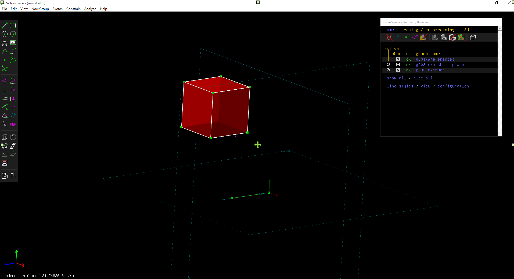

WEEK <<
Previous Next >> Week6-9
week2-5
week2
- 在自己的git hub建立新倉儲 cad2019 ，並且到mde.tw下載2019Fall可攜套件.7z
- 使用git config --global user.name "user name"與git config --global user.email "user email" 設定自己的名字與email
- 使用git submodule add新的指令 指令如下 ( git submodule add https://github.com/mdecourse/cmsimde.git cmsimde )
- 輸入指令python -m pip install flask cors
- 開啟近端開始更新內容，更新完成使用一上所使用的 git指令(git status、git pull .....)
week3
1. Y:\portablegit\bin\sh.exe 重新命名為 sh_rename_for_solvespace.exe
2. 輸入指令git clone --recurse-submodules
3. 在cmakelist內之713及714行(加入#字號)
4. 進到cd solvespace>cd extlib>cd libpng>mkdir build>cd build
5. 執行cmake .. -G "MinGW Makefiles" -DCMAKE_BUILD_TYPE=Release
mingw32-make
6. 找 libpng.dll.a 更名，並更名名為 libpng_static.a
7. 回到 solvespace ,建立 build 後進入 build
8. 執行cmake .. -G "MinGW Makefiles" -DCMAKE_BUILD_TYPE=Release
mingw32-make
week4
補做之前未跟上的進度
week5
solvespace的基本操作練習
1.先將solvespace打開
2.繪製一個35x35的方形 (快捷鍵D可以定義尺寸)
3.點選New group extruding active sketch (快捷鍵Shift+X)
4.旁邊小視窗會出現一個in 3D的字樣
5.點選草圖然後按下滑鼠中鍵可以旋轉
6.成功進入3D之後旁邊小視窗找到color，再旁邊會有一個change那就是可以改顏色的部分
7.在color下有個opacity可以更改方塊的透明度
8.基本的練習 (測量點到點的距離、隱藏座標、隱藏point的部分)
完成圖

以下是練習影片
WEEK <<
Previous Next >> Week6-9